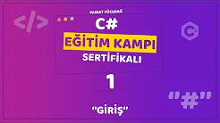

Murat YÜCEDAĞ ile C# Eğitim Kampı.
Murat Yücedağ'ın hazırlayıp yayımladığı yazılıma
gönül vermiş ve yeni başlayanlar için rehber olabilecek bir etkinlik.

Proje 1: GİRİŞ
Bu derste
- İhtiyaç olan Visual Studio bileşenleri,
- Projenin Oluşturulması,
- Yazdırma Komutları,
- String Değişkenler,
- Int Değişkenler
- Ekstra Kurs Tavsiyeleri
- ve Tavsiye - Yazılım Sektöründe İstikrar konularında bilgi sahibi olduk.
------------------------------------------------------------
Proje 1: GİRİŞ
Bu derste
- İhtiyaç olan Visual Studio bileşenleri,
- Projenin Oluşturulması,
- Yazdırma Komutları,
- String Değişkenler,
- Int Değişkenler
- Ekstra Kurs Tavsiyeleri
- ve Tavsiye - Yazılım Sektöründe İstikrar konularında bilgi sahibi olduk.